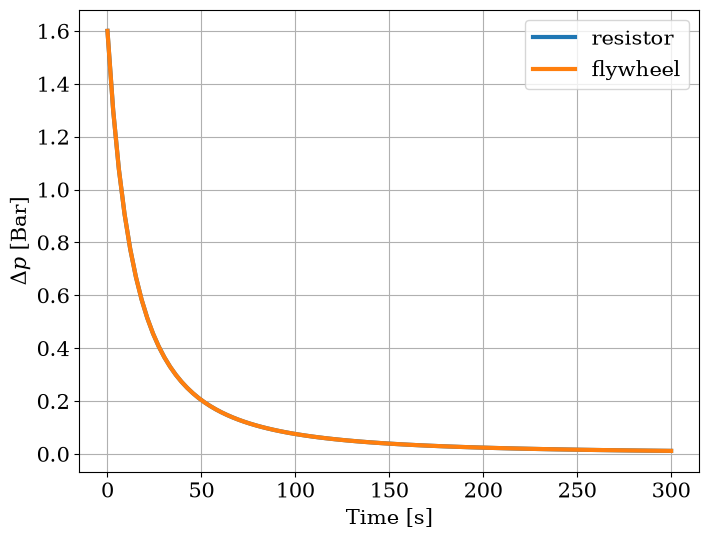
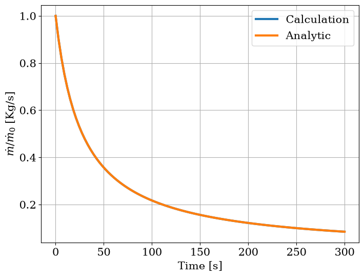
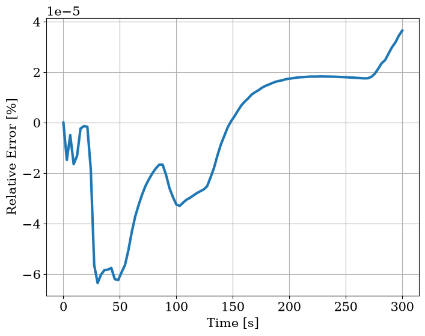

Primary Cooling System Coastdown#
In this example we wish to take a look at a research nuclear reactor’s Primary Cooling System (PCS) which begins to shut down (say, in a Loss Of Flow event). Luckily, a flywheel is installed, which dampens the quick loss of flow and saves the day (supposedly).
This example does not deal with any specific real reactor parameters, and includes only 3 effective components:
Pump
Flywheel
Resistor, effectively representing PCS + core
We will solve the problem both numerically and analytically and compare the two solutions.
[1]:
import matplotlib.pyplot as plt
import numpy as np
from matplotlib import rc
rc("font", family="serif", size=15)
rc("savefig", dpi=600)
rc("figure", figsize=(8, 6))
rc("mathtext", fontset="dejavuserif")
rc("lines", linewidth=3)
from stream.calculations import Inertia, Pump
from stream.composition import ResistorFromKnownPoint
Primary Cooling System Components#
Primary Pump#
[2]:
dp0 = 1.6e5
pump = Pump(pressure=dp0, name="Pump")
Flywheel (Electrically, an Inductor)#
[3]:
inertia = 8e3
flywheel = Inertia(inertia=inertia, name="Flywheel")
Resistor#
[4]:
from stream.substances import light_water
from stream.units import hour
T = 20.0
Q0 = 2000 / hour
rho0 = light_water.density(T)
mdot0 = Q0 * rho0
resistor = ResistorFromKnownPoint(dp=-dp0, mdot=mdot0, behavior="parabolic", Tin=T, fluid=light_water, name="PCS")
Assembling the Coastdown Simulation#
[5]:
import pandas as pd
from stream.calculations import KirchhoffWDerivatives
from stream.calculations.kirchhoff import to_str
from stream.composition import flow_edge, flow_graph, flow_graph_to_agr_and_k
[6]:
fg = flow_graph(flow_edge(("A", "B"), pump, flywheel), flow_edge(("B", "A"), resistor))
agr, K = flow_graph_to_agr_and_k(
fg,
inertial_comps=[flywheel],
k_constructor=KirchhoffWDerivatives,
funcs={resistor: {"Tin": T}},
)
from stream.analysis.report import report
report(agr)
Contains 10 Equations, 4 Nodes, 12 Edges.
Calculation |
Type |
Equation No. |
Unset |
Set Externally |
Missing |
|---|---|---|---|---|---|
Pump |
Pump |
0 - 2 |
pressure, mdot0 |
||
Flywheel |
Inertia |
2 - 4 |
|||
PCS |
Friction |
4 - 6 |
Tin |
||
Kirchhoff |
KirchhoffWDerivatives |
6 - 10 |
[7]:
steady = agr.save(
agr.solve_steady(
{
K.name: {
"(A -> B, 0)": mdot0,
"(A -> B, mdot2 0)": 0.0,
"(B -> A, 0)": mdot0,
"(B -> A, mdot2 0)": 0.0,
},
pump.name: {"Tin": T, "pressure": dp0},
resistor.name: {"Tin": T, "pressure": -dp0},
flywheel.name: {"Tin": T, "pressure": 0.0},
}
)
)
pd.DataFrame(steady.filter_values(lambda v: not np.isclose(v, 0)))
[7]:
| Pump | Flywheel | PCS | Kirchhoff | |
|---|---|---|---|---|
| Tin | 20.0 | 20.0 | 20.0 | NaN |
| pressure | 160000.0 | NaN | -160000.0 | NaN |
| (A -> B, 0) | NaN | NaN | NaN | 554.419285 |
| (B -> A, 0) | NaN | NaN | NaN | 554.419285 |
Analytic Solution of the Transient#
Assuming the pump has shut down immediately (that is, imposes zero pressure drop), the Kirchhoff Voltage Law (KVL) of the system looks like:
Using \(\alpha \equiv k/L\):
It is easy to verify that the equation above is solved by:
Transient Calculation#
[8]:
pump.p = 0.0
t = np.linspace(0, 300, 100)
transient = agr.solve(steady, time=t)
[9]:
plt.figure(figsize=(8, 6))
plt.plot(t, -agr.at_times(transient, resistor, "pressure") / 1e5, label="resistor")
plt.plot(t, agr.at_times(transient, flywheel, "pressure") / 1e5, label="flywheel")
plt.xlabel("Time [s]")
plt.ylabel(r"$\Delta p$ [Bar]")
plt.legend()
plt.grid()

Comparing analytic and calculation of \(\dot{m}\):
[10]:
mdotc = agr.at_times(transient, K, to_str(("A", "B", 0)))
mdot0 = steady[K.name][to_str(("A", "B", 0))]
α = np.abs(resistor.dp_out(mdot=1.0, Tin=T) / inertia)
mdota = mdot0 / (1 + α * mdot0 * t)
plt.figure(figsize=(8, 6))
plt.plot(t, mdotc / mdot0, label="Calculation")
plt.plot(t, mdota / mdot0, label="Analytic")
plt.legend()
plt.xlabel("Time [s]")
plt.ylabel(r"$\dot{m} / \dot{m}_0$ [Kg/s]")
plt.grid()

[11]:
plt.figure(figsize=(8, 6))
plt.plot(t, 100 * (mdotc - mdota) / mdota)
plt.xlabel("Time [s]")
plt.ylabel("Relative Error [%]")
plt.grid()

As one can see, the analytic solution is well reproduced by the calculation.